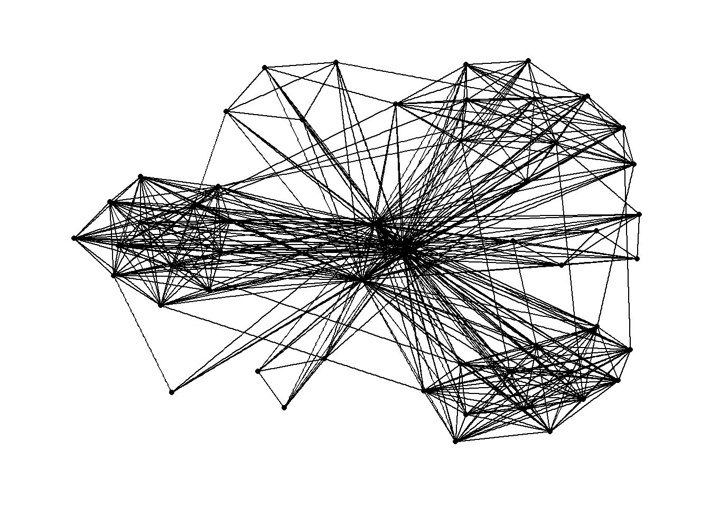
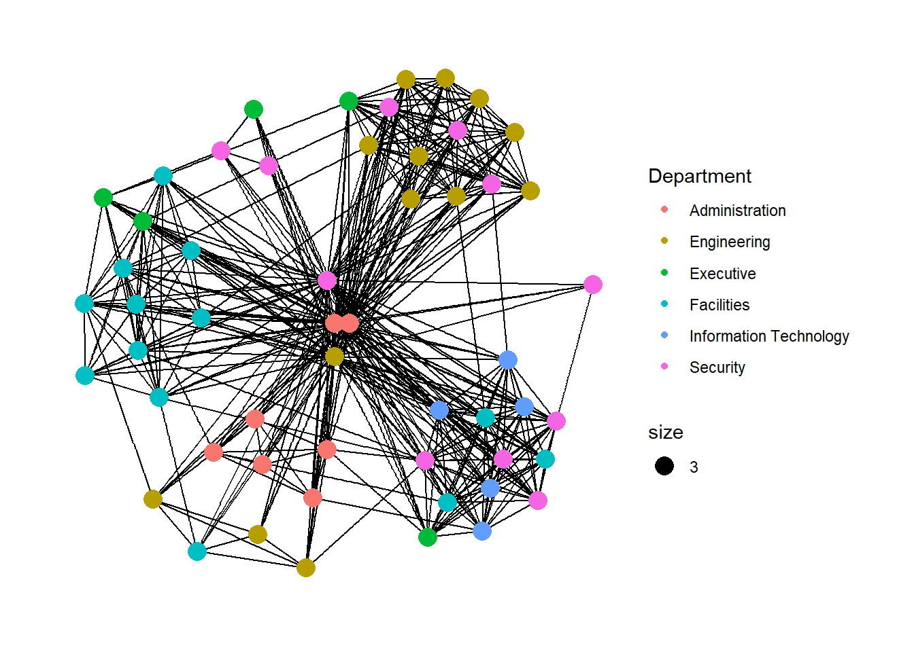
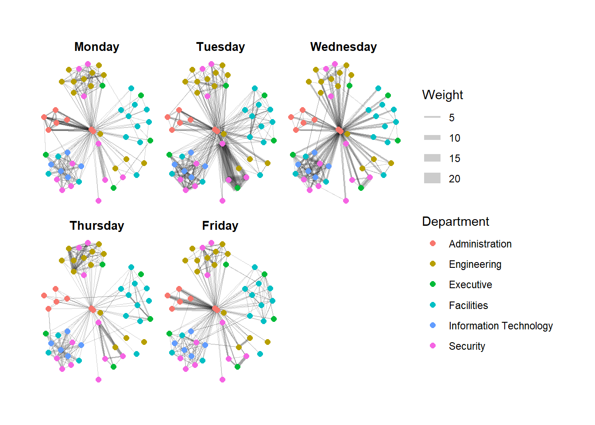

pacman::p_load(igraph, tidygraph, ggraph, visNetwork, lubridate, clock, tidyverse, graphlayouts)In_Class_Ex_08
Installing and launching R packages
We will load the necessary R packages that are required for this exercise:
Importing Network Data
In this step, we will import the files into R Studio using read_csv() of readr package:
GAStech_nodes <- read_csv("data/GAStech_email_node.csv")
GAStech_edges <- read_csv("data/GAStech_email_edge-v2.csv")Once loaded, let’s review the data structed of the data fram using glimpse() of dplyr:
glimpse(GAStech_edges)Rows: 9,063
Columns: 8
$ source <dbl> 43, 43, 44, 44, 44, 44, 44, 44, 44, 44, 44, 44, 26, 26, 26…
$ target <dbl> 41, 40, 51, 52, 53, 45, 44, 46, 48, 49, 47, 54, 27, 28, 29…
$ SentDate <chr> "6/1/2014", "6/1/2014", "6/1/2014", "6/1/2014", "6/1/2014"…
$ SentTime <time> 08:39:00, 08:39:00, 08:58:00, 08:58:00, 08:58:00, 08:58:0…
$ Subject <chr> "GT-SeismicProcessorPro Bug Report", "GT-SeismicProcessorP…
$ MainSubject <chr> "Work related", "Work related", "Work related", "Work rela…
$ sourceLabel <chr> "Sven.Flecha", "Sven.Flecha", "Kanon.Herrero", "Kanon.Herr…
$ targetLabel <chr> "Isak.Baza", "Lucas.Alcazar", "Felix.Resumir", "Hideki.Coc…Take note: the output of the GAStech_edges reveals that SentDate is treated as a Character data type instead of a Date data type. This is actually an error as we need the data types to be accurate.
Let’s change the data type using the following code chunk:
GAStech_edges <- GAStech_edges %>%
mutate(SentDate = dmy(SentDate)) %>%
mutate(Weekday = wday(SentDate, label = TRUE, abbr = FALSE))Take note:
- both dmy() and wday() are functions of the lubridate package, which is an R package that makes it easier to work with dates and times
- dmy() transforms the SentDate field into a Date data type
- wday() returns the day of the week as a decimal number (or an ordered factor if label is set to TRUE), and the argument abbr = FALSE will keep the days spelt in full (e.g., Monday)
- the values in the Weekday field are in ordinal scale
Let’s check how the data structure looks like now:
glimpse(GAStech_edges)Rows: 9,063
Columns: 9
$ source <dbl> 43, 43, 44, 44, 44, 44, 44, 44, 44, 44, 44, 44, 26, 26, 26…
$ target <dbl> 41, 40, 51, 52, 53, 45, 44, 46, 48, 49, 47, 54, 27, 28, 29…
$ SentDate <date> 2014-01-06, 2014-01-06, 2014-01-06, 2014-01-06, 2014-01-0…
$ SentTime <time> 08:39:00, 08:39:00, 08:58:00, 08:58:00, 08:58:00, 08:58:0…
$ Subject <chr> "GT-SeismicProcessorPro Bug Report", "GT-SeismicProcessorP…
$ MainSubject <chr> "Work related", "Work related", "Work related", "Work rela…
$ sourceLabel <chr> "Sven.Flecha", "Sven.Flecha", "Kanon.Herrero", "Kanon.Herr…
$ targetLabel <chr> "Isak.Baza", "Lucas.Alcazar", "Felix.Resumir", "Hideki.Coc…
$ Weekday <ord> Monday, Monday, Monday, Monday, Monday, Monday, Monday, Mo…When examining the data frame, it is observable that this data frame consists of individual email flow records. This will not be helpful when building visualizations. As such, let’s aggregate the individual records by Date, Senders, Receiver, Main Subject and Day of the Week.
The code chunk does the above:
GAStech_edges_agg <- GAStech_edges %>%
filter(MainSubject == "Work related") %>%
group_by(source, target, Weekday) %>%
summarize(Weight = n()) %>%
filter(source != target) %>%
filter(Weight > 1) %>%
ungroup()Take note:
- four functions from dplyr package are used: filter(), group(), summarise() and ungroup()
- a new field called Weight has been added to store the number of emails that were sent between a source and target per weekday
Let’s check how the data structure looks like now:
glimpse(GAStech_edges_agg)Rows: 1,456
Columns: 4
$ source <dbl> 1, 1, 1, 1, 1, 1, 1, 1, 1, 1, 1, 1, 1, 1, 1, 1, 1, 1, 1, 1, 1,…
$ target <dbl> 2, 2, 2, 2, 3, 3, 3, 3, 4, 4, 4, 4, 5, 5, 5, 5, 6, 6, 6, 6, 7,…
$ Weekday <ord> Monday, Tuesday, Wednesday, Friday, Monday, Tuesday, Wednesday…
$ Weight <int> 4, 3, 5, 8, 4, 3, 5, 8, 4, 3, 5, 8, 4, 3, 5, 8, 4, 3, 5, 8, 4,…Creating Newtork Objects (tidygraph)
In this section, we will create a graph data model using tidygraph package. This package provides a tidy API for graph/network manipulation.
While network data itself is not tidy, it can be envisioned as two tidy tables - one for node data and one for edge data. With tidygraph, we can switch between the two tables and provide dplyr verbs to manipulate them.
There are two main functions in tidygraph package to create network objects
- tbl_graph() creates a tbl_graph network object from nodes and edges data
- as_tbl_graph() converts a network data and objects to a tbl_graph network
The following are the dplyr verbs in tidygraph
- activate() verb serves as a switch between tibbles for nodes and edges
- .N() function can be used to gain access to the node data while manipulating the edge data
- similarly, .E() function will give you the edge data
- likewise, .G() function will give you the tbl_graph object itself
All dplyr verbs applied to tbl_graph object are also applied to the active tibble.
The code chunk below is used to build a network graph:
GAStech_graph <- tbl_graph(nodes = GAStech_nodes,
edges = GAStech_edges_agg,
directed = TRUE)
GAStech_graph# A tbl_graph: 54 nodes and 1456 edges
#
# A directed multigraph with 1 component
#
# Node Data: 54 × 4 (active)
id label Department Title
<dbl> <chr> <chr> <chr>
1 1 Mat.Bramar Administration Assistant to CEO
2 2 Anda.Ribera Administration Assistant to CFO
3 3 Rachel.Pantanal Administration Assistant to CIO
4 4 Linda.Lagos Administration Assistant to COO
5 5 Ruscella.Mies.Haber Administration Assistant to Engineering Group Manag…
6 6 Carla.Forluniau Administration Assistant to IT Group Manager
# … with 48 more rows
#
# Edge Data: 1,456 × 4
from to Weekday Weight
<int> <int> <ord> <int>
1 1 2 Monday 4
2 1 2 Tuesday 3
3 1 2 Wednesday 5
# … with 1,453 more rowsTake note:
- the output reveals that GAStech_graph is a tbl_graph object with 54 nodes and 1456 edges
- the command also prints the first six rows of the Node data and the first three rows of the Edge data
- this states that the Node data is active, meaning that we can manipulate the data in the tbl_graph object one tibble at a time
If we want to change which tibble data frame is active, as well as rearrange the rows in the edges tibble to list those with the highest “weight” first, we can use the code chunk below:
GAStech_graph %>%
activate(edges) %>%
arrange(desc(Weight))# A tbl_graph: 54 nodes and 1456 edges
#
# A directed multigraph with 1 component
#
# Edge Data: 1,456 × 4 (active)
from to Weekday Weight
<int> <int> <ord> <int>
1 40 41 Tuesday 23
2 40 43 Tuesday 19
3 41 43 Tuesday 15
4 41 40 Tuesday 14
5 42 41 Tuesday 13
6 42 40 Tuesday 12
# … with 1,450 more rows
#
# Node Data: 54 × 4
id label Department Title
<dbl> <chr> <chr> <chr>
1 1 Mat.Bramar Administration Assistant to CEO
2 2 Anda.Ribera Administration Assistant to CFO
3 3 Rachel.Pantanal Administration Assistant to CIO
# … with 51 more rowsPlotting Network Data (ggraph)
Let’s plot a basic network graph:
ggraph(GAStech_graph) +
geom_edge_link() +
geom_node_point()
Take note:
- the basic plotting function is ggraph()
- this takes the data to be used for the graph and the type of layout desired
- both of the arguents for ggraph() are built around igraph
- therefore, ggraph() can use either an igraph object or a tbl_graph object
We can also plot the network graph using Fruchterman and Reingold layout:
g <- ggraph(GAStech_graph,
layout = "fr") +
geom_edge_link(aes()) +
geom_node_point(aes())
g + theme_graph()
We can also colour each node by referring to their respective departments:
g <- ggraph(GAStech_graph,
layout = "nicely") +
geom_edge_link(aes()) +
geom_node_point(aes(colour = Department,
size = 3))
g + theme_graph()
Creating Facet Graphs
In the code chunk below, we use facet_edges():
set_graph_style()
g <- ggraph(GAStech_graph,
layout = "nicely") +
geom_edge_link(aes(width = Weight),
alpha = 0.2) +
scale_edge_width(range = c(0.1, 5)) +
geom_node_point(aes(colour = Department),
size = 2)
g + facet_edges(~ Weekday)
xxx